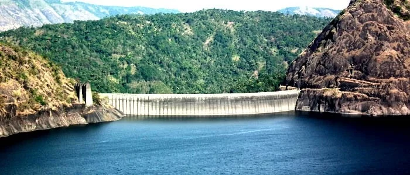
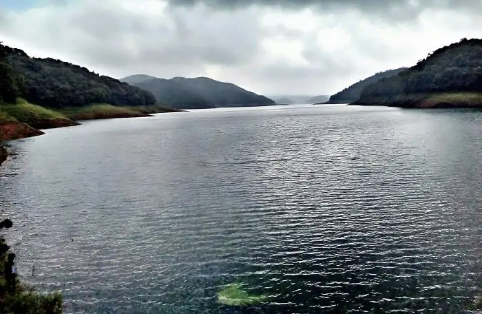
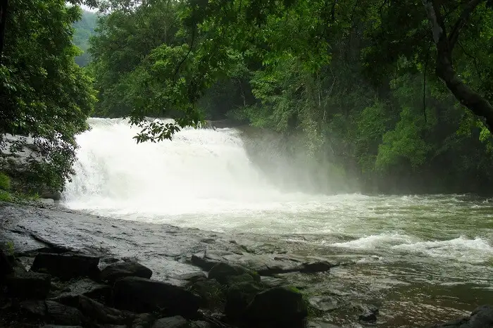

Idukki (ഇടുക്കി), is one of the 14 districts in the Indian state of Kerala. Idukki district lies amid the Cardamom Hills of Western Ghats in Kerala. Idukki district contains two municipal towns - Kattappana and Thodupuzha. The district currently includes five taluks in it.The district was constituted on 26 January 1972, by taking Peerumade, Udumbanchola, Devikulam taluks of the former High Range division from Kottayam district and the Thodupuzha taluk from Ernakulam district Its division was previously headquartered at Kottayam city, but moved to Kuyilimala near Painavu and Cheruthoni in June 1976. Malayalam and English are the two official administrative languages in the district.
Famous Spots

Idukki Arch Dam

Periyar Tiger Reserve, Thekkady
Munnar

Painavu
